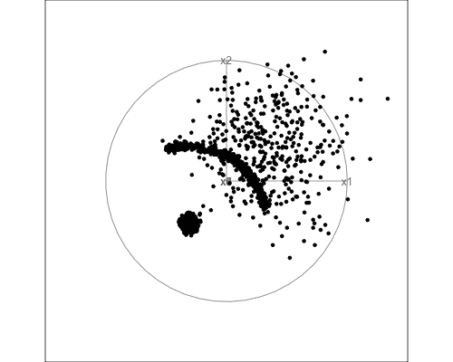

S <- rbind(c(3,1),c(1,2)) # 2 X 2 Matrix creation
X <- rbind(4,2) # 2 X 1 Matrix creation
A <- rbind(1,-1) # 2 X 1 Matric creation
Matrix_calculation <- t(X-A) %*% solve(S) %*% (X-A) #Matrix multiplicationETC3250/5250 Assignment 1
Exercises
1. Basic math and computing
The matrix calculation for computing \((X-A)^T S^{-1}(X-A)\) yields the result 5.4.
2. ML concepts
a) Model accuracy
| y | pred1 | pred2 | bilby1 | bilby2 | quokka1 | quokka2 |
|---|---|---|---|---|---|---|
| bilby | bilby | bilby | 0.8 | 0.80 | 0.2 | 0.20 |
| bilby | bilby | bilby | 0.9 | 0.51 | 0.1 | 0.49 |
| bilby | bilby | bilby | 0.9 | 0.60 | 0.1 | 0.40 |
The computations to assess the model metrics are delineated in the panel tabsets below.
The accuracy for model 1 which is calculated based on the number of true positives and the true negatives is observed to be 0.778.
However, the accuracy parameter for a model may not always be the best indicator. This is especially true when the data may contain unbalanced class distribution. In this case, we will rely on balanced accuracy which is based on the true positive and the true negative rate of prediction for the model.
The balanced accuracy for model 1 is found to be 0.775.
Figure 1 illustrates the detailed confusion matrix for model 1 with the critical model parameters which are useful indicators of model performance.

The accuracy for model 2 which is calculated based on the number of true positives and the true negatives is observed to be 0.63. The balanced accuracy for the same model which is based on the true positive and the true negative rates are 0.629.
Figure 2 illustrates the detailed confusion matrix for model 2.

b) Sensitivity and Specificity with revised threshold values
1) When the threshold value for classification in model 1 is 0.3
The sensitivity for model 1 when the threshold value for positive Bilby classification is 0.3 and above is 0.958. The value for 1-Specificity for the same model which is based on the true positive and the true negative rates is 0.767.
2) When the threshold value for classification in model 2 is 0.3

The sensitivity for model 2 when the threshold value for positive Bilby classification is 0.3 and above is 0.833. The value for 1-Specificity for the same model which is based on the true positive and the true negative rates is 0.667. Other detailed model performance metrics for model 2 with a threshold value of 0.3 can be referred to in Figure 4.
1) When the threshold value for classification in model 1 is 0.4

2) When the threshold value for classification in model 2 is 0.4

The sensitivity for model 2 when the threshold value for positive Bilby classification is 0.4 and above is 0.833. The value for 1-Specificity for the same model which is based on the true positive and the true negative rates is 0.467. Other detailed model performance metrics for model 2 with a threshold value of 0.3 can be referred to in Figure 6.
c) Receiver Operative Curve (ROC) visualisation for model output

Key takeaway
As we can observe from Figure 7, the area under the curve (AUC) covered by the ROC of model 1 is larger when in comparison to model 2. This indicates that the model 1 is performing better than the results obtained through model 2.
The higher the curve is to the top left point of the plot, the higher the true positive rate of the model (measured through sensitivity) as well as the least false positive rate (measured through 1-specificity).
3. Visualisation
Here, we are required to visualise a high-dimensional data which contains 6 different variables. Due to the complexity of the data in hand and the multiple dimensions we are looking to study, it is often not possible to understand the correlation of each dimension through simple 2-dimensional plots such as scatter plots. Hence, we will be primarily studying the data through various high dimensional visualisation techniques, namely scatter plot matrix, UMAP and the grand tour.
a) 2D Scatter plot matrix

Key takeaway
Based on the scatter plot matrix as illustrated by Figure 8, it is difficult to ascertain any particular pattern when evaluating each of the pair of variables against one another. While there appears to be a very weak relationship between X1 and X2 owing to a correlation of 0.45, however, it is difficult to obtain any insight as the scatter points are randomly spread out on the 2D space. The remaining pair of variables show even weaker correlation, thereby indicating that each of the pair of variables are non-linearly related to one another.
b) Non-linear dimension reduction using UMAP
The uniform manifold approximation and projection (UMAP) compares the interpoint distances with what might be expected if the data was uniformly distributed in the high dimensional shapes.

Note
Based on the UMAP representation of the data on a 2D space upon reducing the dimensions into UMAP1 and UMAP2, we can observe that the data points have segregated into two regions of the plane, thereby creating two clusters. On the bottom left of the 2D space, we can clearly recognise the cluster due to most points concentrating close to one another. However, for the remaining set of the data, there is a high variance and these points cover a wide space on the 2D plane. While some of those points appear to be concentrating in the center (possibly due to clumping), however, the remaining points are much more widely spread.
Hence, we can expect a fair number of outliers while visualising the second cluster.
c) High-dimensional data visualisation using the grand tour
While we have already visualised the data on the 2D space by looking at the correlation among the variables, we now attempt to visualise the high-dimensional data in its true form by creating a tour which is an animation of the data points in the multi-dimensional space. The main advantage of this technique is that there is no information lost when drawing insights as we are effectively looking at all the data points in its original dimensions.

Key takeaway
While analysing the tour as illustrated by Figure 10, we can observe the presence of a particular cluster of points which are concentrated close to one another. This was previously detected in Figure 9 aswell.
In addition to the above finding, we can also observe that the points other than those in the identified cluster appear to be entirely on the plane generated by the axes X1 and X2.This information was not possible to obtain from Figure 9 due to its inherent functionality of reducing all the dimensions to two dimensions, thereby reducing the interpretability of the plot.
There also appears to be a particular orientation of the dimensions when the scatter points are linearly arranged. This was observed through a combination of the dimensions X3,X5 and X6.
4. Dimension reduction
In this exercise, we are required to analyse a dataset which contains multiple number of variables as illustrated by Table 2.
| Player | Start | End | Matches | Innings | NotOuts | Runs | HighScore | Average | BallsFaced | StrikeRate | Hundreds | Fifties | Ducks | Fours | Sixes | Overs | Maidens | Wickets | Economy | FourWickets | FiveWickets |
|---|---|---|---|---|---|---|---|---|---|---|---|---|---|---|---|---|---|---|---|---|---|
| MM Lanning | 2010 | 2023 | 132 | 121 | 28 | 3405 | 133 | 36.61290 | 2926 | 116.37047 | 2 | 15 | 1 | 405 | 47 | 6.0 | 0 | 4 | 6.500000 | 0 | 0 |
| AJ Healy | 2010 | 2024 | 153 | 135 | 21 | 2795 | 148 | 24.51754 | 2164 | 129.15896 | 1 | 16 | 12 | 372 | 54 | 0.0 | 0 | 0 | 0.000000 | 0 | 0 |
| BL Mooney | 2016 | 2024 | 95 | 89 | 22 | 2764 | 117 | 41.25373 | 2238 | 123.50313 | 2 | 22 | 4 | 362 | 16 | 0.0 | 0 | 0 | 0.000000 | 0 | 0 |
| EA Perry | 2008 | 2024 | 151 | 95 | 37 | 1841 | 75 | 31.74138 | 1585 | 116.15142 | 0 | 9 | 5 | 163 | 45 | 401.5 | 8 | 125 | 5.845707 | 4 | 0 |
| EJ Villani | 2009 | 2018 | 62 | 58 | 10 | 1369 | 90 | 28.52083 | 1158 | 118.22107 | 0 | 12 | 4 | 177 | 12 | 0.0 | 0 | 0 | 0.000000 | 0 | 0 |
| AJ Blackwell | 2005 | 2017 | 95 | 81 | 19 | 1314 | 61 | 21.19355 | 1414 | 92.92786 | 0 | 1 | 5 | 87 | 1 | 1.0 | 0 | 0 | 14.000000 | 0 | 0 |
In order to obtain insights from the data, we need to study the various variables in the current dataset. However, with the high number of variables present, it makes it extremely complicated to individually study each pair of variables.
In this exercise, we will apply a dimensionality reduction technique called the Principal Componenent Analysis (PCA). This technique is based on creating a linear combination of the variables such that the variance in the data is maximised, and are mutually uncorrelated.
Implementation of PCA in the current dataset
The chunk below provides the code required to compute the PCA for the current data.
cricket_pca <- prcomp(df_cricket[,2:dim(df_cricket)[2]],scale=TRUE)a) Summary of the PCA
| PC1 | PC2 | PC3 | PC4 | PC5 | PC6 | PC7 | PC8 | PC9 | PC10 | PC11 | PC12 | PC13 | PC14 | PC15 | PC16 | PC17 | PC18 | PC19 | PC20 | PC21 | |
|---|---|---|---|---|---|---|---|---|---|---|---|---|---|---|---|---|---|---|---|---|---|
| Variance | 9.38 | 4.44 | 1.96 | 1.14 | 0.97 | 0.83 | 0.65 | 0.48 | 0.29 | 0.23 | 0.17 | 0.13 | 0.11 | 0.09 | 0.06 | 0.04 | 0.02 | 0.01 | 0 | 0 | 0 |
| Proportion | 0.45 | 0.21 | 0.09 | 0.05 | 0.05 | 0.04 | 0.03 | 0.02 | 0.01 | 0.01 | 0.01 | 0.01 | 0.01 | 0.00 | 0.00 | 0.00 | 0.00 | 0.00 | 0 | 0 | 0 |
| Cum. prop | 0.45 | 0.66 | 0.75 | 0.81 | 0.85 | 0.89 | 0.92 | 0.95 | 0.96 | 0.97 | 0.98 | 0.98 | 0.99 | 0.99 | 1.00 | 1.00 | 1.00 | 1.00 | 1 | 1 | 1 |
Table 3 provides a succinct summary of the variance of each principal component and the proportion of variance explained by that particular principal componenet (PC).
Key takeaway
Table 3 would allow us to obtain the ideal number of PCs which would capture the most amount of variance in the data, at the same time, being able to discard some of the PCs which do not contribute much to explain the variance. In this manner, we not only obtain the important PCs, but also reduce the overall complexity of the model by reducing the overall dimension of the data.
b) Biplot generation for PC1 and PC2
Figure 11 illustrates the biplot distribution for the first two PCs of the data.
c) Choosing the appropriate number of PCs
References
Hadley Wickham, Dianne Cook, Heike Hofmann, Andreas Buja (2011). tourr: An R Package for Exploring Multivariate Data with Projections. Journal of Statistical Software, 40(2), 1-18. URL http://www.jstatsoft.org/v40/i02/.
Kuhn et al., (2020). Tidymodels: a collection of packages for modeling and machine learning using tidyverse principles. https://www.tidymodels.org
OpenAI (2023). ChatGPT (version 3.5) [Large language model]. https://chat.openai.com/chat, full script of conversation here